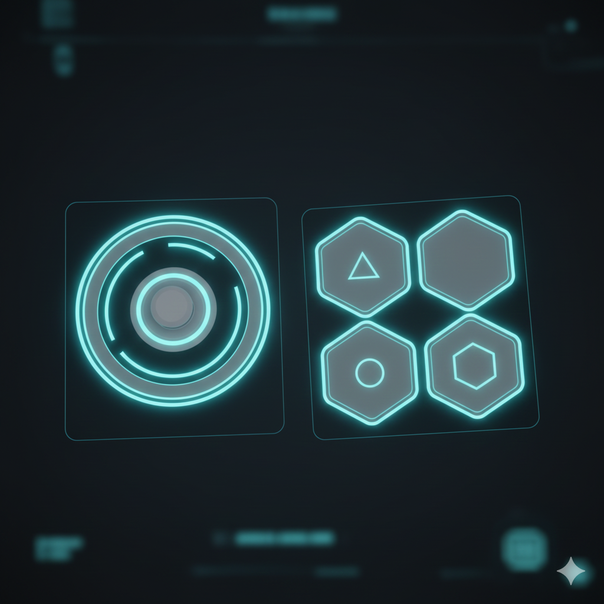

57 Guía de Diseño UI
57.2 Principios Generales
UI holográfica minimalista para visor integrado en traje de Elías. Enfoque en legibilidad extrema en entornos de baja luz, gravedad variable y alta velocidad. Input táctil simple: gestos swipe, tap y pinch. Prioridad: no distraer del gameplay de plataformas.
57.3 Paleta de Colores y Materiales
Primario: Cyan #00FFFF (80% opacidad) para elementos activos.
Secundario: Cyan claro #A0FFFF (40% opacidad) para fondos.
Acentos: Naranja #FF6600 (traje Elías) para alertas críticas.
Transparencia: Zonas 70-90% transparentes para integrar con visor real. Bordes glow suaves (bloom cyan).
Fondo: Negro #000000 con niebla volumétrica ambiental.
57.4 Elementos Principales UI
57.4.1 HUD Visor (Siempre Visible)
[Mini-mapa curvado esquina superior izq.] [Energía Propulsor: barra horizontal] [Objetivo: texto cyan flotante centro] [Estado Cargol: icono dron izq./der.] [Gravedad: icono vector rotatorio abajo] [Alerta: flash naranja emergencias]
- Tamaño: 15% pantalla. Escala con FOV dinámico.
El mini mapa - puede accederse a través del GIZMO
57.4.2 Pantalla Holográfica Principal (Activación por gesto)
Activación: Swipe hacia arriba desde borde inferior visor.
Geometría: Plano flotante semitransparente frente al jugador (10% distancia focal).
Secciones:
+-----------------------------+ | NAV-OS v2.7 | Odisea Ark | <- Header cyan glow +-------------+---------------+ | Posicion: | Rumbo: Titan | <- Datos mision | Sector: B2 | Tiempo: 6.2y | +-------------+---------------+ | [Mapa 3D] | [Sistemas] | <- Swipe horizontal entre pestanas +-------------+---------------+
57.4.3 Gestos Táctiles (Muy Simple)
Tap: Seleccionar nodo mapa / confirmar acción.
Swipe Izq/Der: Cambiar pestañas (mapa/sistemas/logs).
Swipe Arriba: Zoom mapa / subir logs.
Swipe Abajo: Ocultar holograma.
Pinch: Zoom in/out mapa 3D.
Doble Tap: Centrar jugador en mapa.
57.5 Pantallas Específicas
57.5.2 Estado Sistemas
CRIO: 49,872 OK | 128 ALERTA GRAV: Variable (Sector B2) PROP: 78% | CARGOL: Online IA-ODISEA: [Protocolo Activo]
- Barras verticales llenado cyan para %.
57.5.3 Logs Narrativos (Diálogos IA)
[IA] "Elías, el desvío preserva la misión." [ELÍAS] "No. Reactivo sistemas."
- Texto cyan scroll automático. Swipe para historial.
57.6 Notas de Implementación
Adaptación Gravedad: UI rota con vector gravedad local (nunca upside-down).
Modo Emergencia: Todo naranja, tamaño +50%, vibración háptica.
Estilo Low-Poly: Bordes geométricos afilados, sin texturas. Glow shader Unity/UE5.
Accesibilidad: Modo high-contrast toggle, escala texto dinámica.
